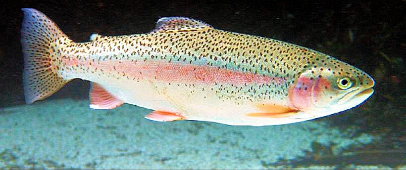
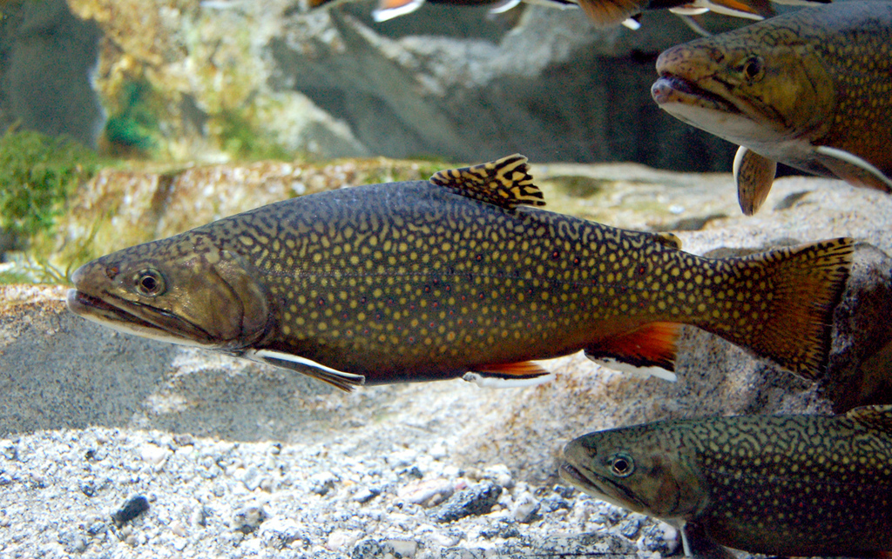
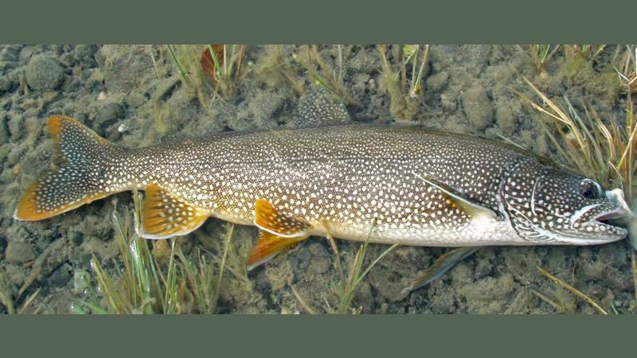
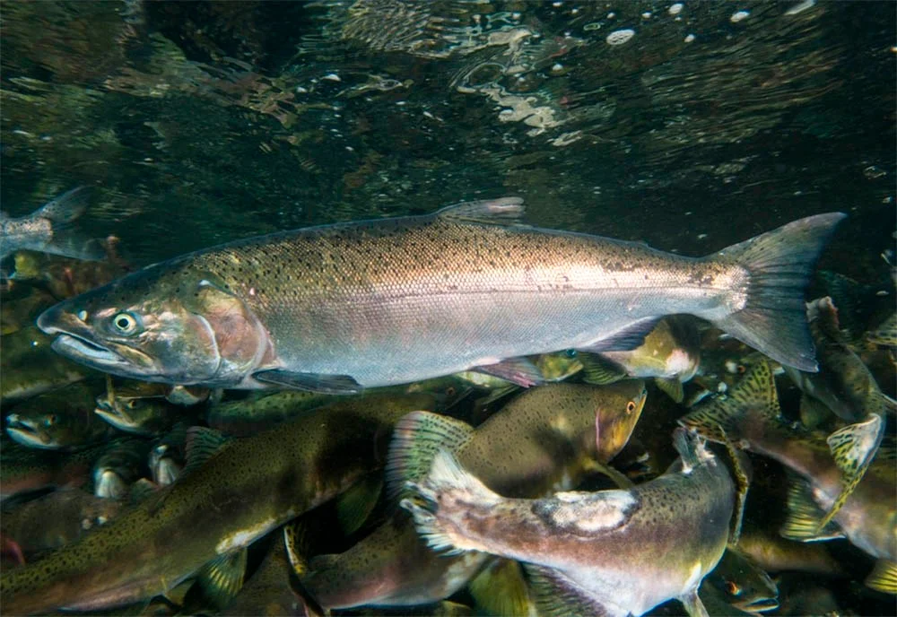
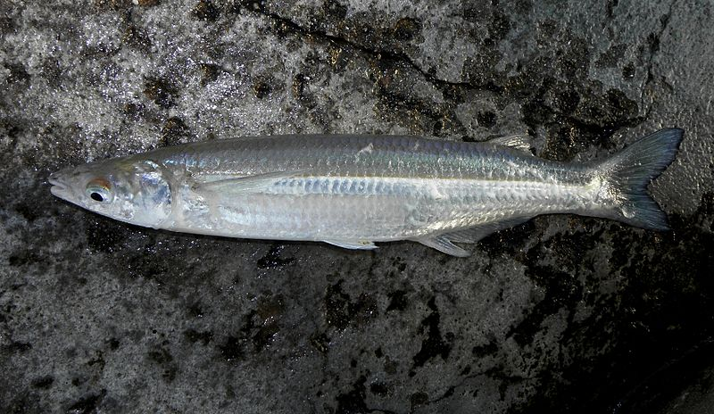
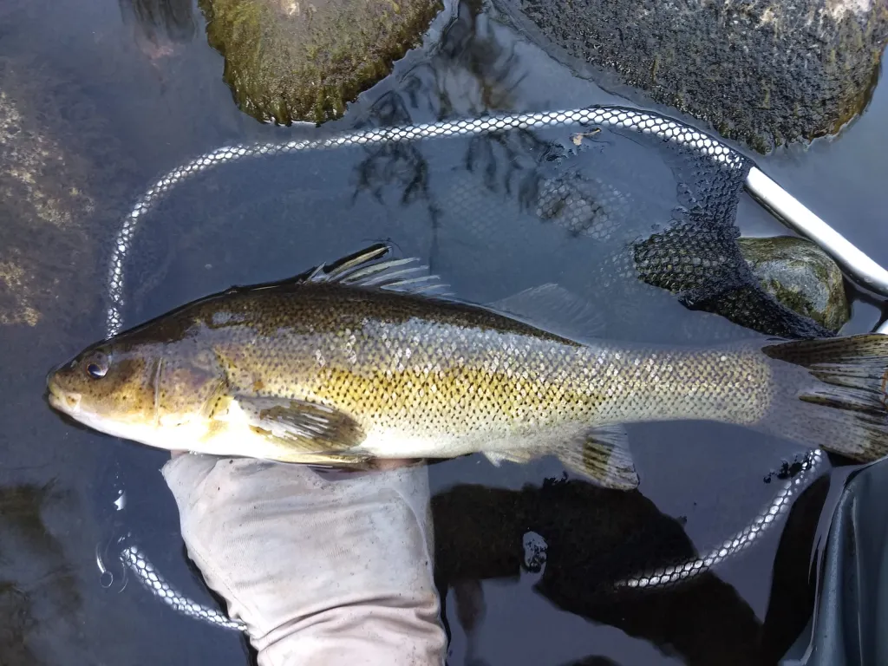
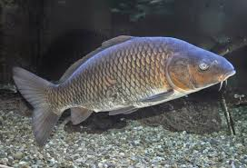

¿Que tipos de Peces hay en la Patagonia?
Trucha Arco iris (Oncorhynchus mykiss)
La trucha arcoiris se distingue de los demás salmónidos por la ancha banda purpúrea que tiene en cada uno de sus flancos, desde el opérculo hasta la cola. Su espalda es verde oliva y sus lados plateados, tornándose blanca en el vientre.
Esta trucha es una especie originaria de América del Norte, con cierto grado de domesticidad y proveniente de varias especies del Pacífico, presente de forma natural en los ríos que desembocan en el Pacífico, desde el sur de Alaska hasta el norte de México. Obviamente este tipo de salmónido fue introducida en gran parte de la Patagónia.
Trucha Marron (Salmo Trutta)

La trucha fario, también conocida como trucha café o marrón es la subespecie Salmo trutta fario, un pez eurihalino marino y de agua dulce de la familia salmónidos, distribuidos por el noreste del océano Atlántico, con poblaciones no migratorias en islas británicas y Francia. Es además común en ríos de las regiones alpinas del centro de Europa y en el sur de Alemania (si bien, estas poblaciones se han visto perjudicadas en las últimas décadas). También se ha descrito su presencia en Grecia, Estonia, Andorra, Argentina y Chile.
Trucha de arroyo (Salvelinus Fontinalis)
La trucha de manantial, trucha de arroyo o salvelino (Salvelinus fontinalis) es una especie de pez de la familia Salmonidae. Es originaria de Norteamérica. El nombre de trucha puede llevar a confusión, ya que se trata de un salvelino, del subgrupo salmoninae. Es una especie que ofrece grandes dificultades en la adaptación, por las diferencias de pH del agua, la temperatura del agua, debe de estar entre los 13 °C y 18 °C, logra soportar algunos grados más, pero a los 25 °C muere. La coloración de su piel es muy llamativa, tiene pintas rojas, amarillas y azuladas, con su panza color blanco y el lomo color oscuro. Se alimenta de insectos, crustáceos y moluscos y de alevines.
Trucha de lago o bocona (Salvelinus namaycush)
Presente solo en las cuencas del lago Argentino y Burmeister. Es un pez muy voraz con un acentuado canibalismo. Alcanza portes muy importantes, que en ocasiones superan los 20 Kg. Es menos combativa que las otras truchas, por lo que no es tan apreciada deportivamente. Se reproduce bien en ambientes lénticos (lagos y lagunas) en áreas profundas, sin depender de los ríos o arroyos.
Salmones del Pacífico (Oncorhynchus)
Aparecen en algunas cuencas que vierten hacia el Pacífico (Ej. Ríos Pico, Corcovado, Futaleufu, Lago Pueyrredón, Lago Buenos Aires y Lago Puelo) y Atlántica (Ej. Ríos Santa Cruz, La Leona, De Las Vueltas y Caterina, y los Lagos Argnentino y Viedma). Son especies anádromas semélparas, es decir mueren después de reproducirse en el agua dulce. Sus altas tasas de crecimiento en el mar los hacen muy atractivos para la pesca. Se han capturado ejemplares que superan holgadamente los 20 Kg. Se alimentan de pequeños invertebrados y luego mayoritariamente de peces y crustáceos marinos.
Pejerrey patagónico (Odontesthes hatcheri)
Posee forma esbelta, muy hidrodinámica y fusiforme. Tiene dos aletas dorsales, la segunda no adiposa con radios, boca protráctil y una banda plateada en ambos flancos. Se alimenta básicamente de crustáceos grandes. Las poblaciones puras se encuentran en algunos ambientes de la provincia de Chubut, Neuquén y Río Negro. En algunos casos coexiste con el introducido pejerrey bonaerense o pejerrey blanco (Odontesthes bonariensis), produciéndose cruzamientos entre ellos. El pejerrey patagónico es más robusto y oscuro, alcanzando tallas menores.
Perca (Percichthys trucha)
Es nativa en las aguas patagónicas y parte de Cuyo. En la Patagonia argentina hay descriptas tres especies aunque estudios recientes hablan de una única especie. Posee una aleta dorsal con una parte anterior con espinas y una parte posterior con radios blandos. Tiene escamas grandes, boca protráctil, el cuerpo es pardo dorado con manchas más o menos oscuras. Este color puede variar según el ambiente. Presentan una natación lenta con un eficiente uso de las aletas pares a modo de remos que les permite detenerse bruscamente cuando lo requieren. Está protegida en las áreas de Parques Nacionales, excepto en el Parque Nacional Laguna Blanca, donde fue introducida presentando actualmente una sobrepoblación que afecta severamente el ambiente.
Carpa (Cyprinus carpio)
Originaria de países asiáticos, fue introducida como alimento y ornamento de estanques en casi todo el mundo. En Patagonia fue introducida accidentalmente por un desborde del río Salado. Tiene un régimen alimentario omnívoro y realiza una acción de remoción de fondos que provoca un impacto severo a los ambientes. Por esta razón, en Patagonia se alienta su pesca sin límite de acopio. Es de color pardo verdoso aunque presenta muchas variaciones. Su cuerpo es robusto, ligeramente curvado en el vientre y arqueado en el dorso. Cabeza con boca pequeña, provista de dos barbas muy características.
| Ubicacion | Especie | Peso | Largo | Fecha |
|---|---|---|---|---|
| Lago Marimenuco-Neuquen | Trucha Arco iris | 17kg | 70cm | 25/01/2023 |
| Rio Limay-Neuquen | Trucha Marron | 25kg | 78cm | 7/09/2005 |
| Rio Meliquina | Trucha de Arroyo | 13kg | 60cm | 15/08/2019 |